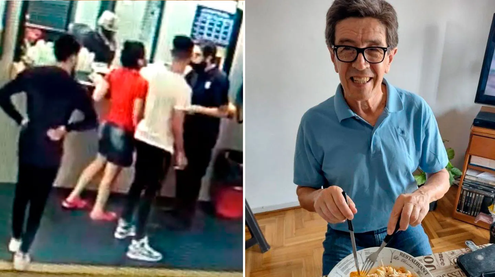
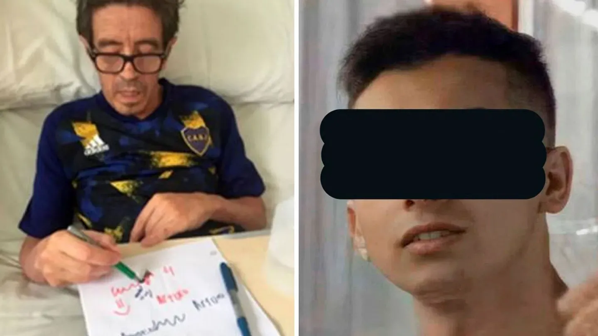

El joven que atacó brutalmente al playero en un estacionamiento podría recibir hasta 12 años de prisión
El fiscal Mauro Tereszko pidió que el acusado sea declarado culpable por tentativa de homicidio y lesiones gravísimas. Este viernes se conocerá el veredicto.
El fiscal Penal Juvenil Mauro Tereszko pidió este jueves que el joven de 18 años que golpeó ferozmente al playero del estacionamiento ubicado en Monserrat sea condenado por el delito de tentativa de homicidio y lesiones gravísimas. Sin embargo, el Tribunal dispuso un cuarto intermedio hasta este viernes, cuando se dará a conocer el veredicto. Tereszko solicitó que el chico, que al momento del ataque tenía 17 años, sea declarado culpable. Tras el ataque, Arturo López, de 67, permanece internado en una clínica privada desde el día de la agresión. Leé también: Empezó el juicio al joven que atacó brutalmente al playero: la familia de la víctima teme que quede impune En su alegato, además, el fiscal pidió la prisión preventiva para el agresor en caso de que el juez dicte sentencia de responsabilidad y culpabilidad.
